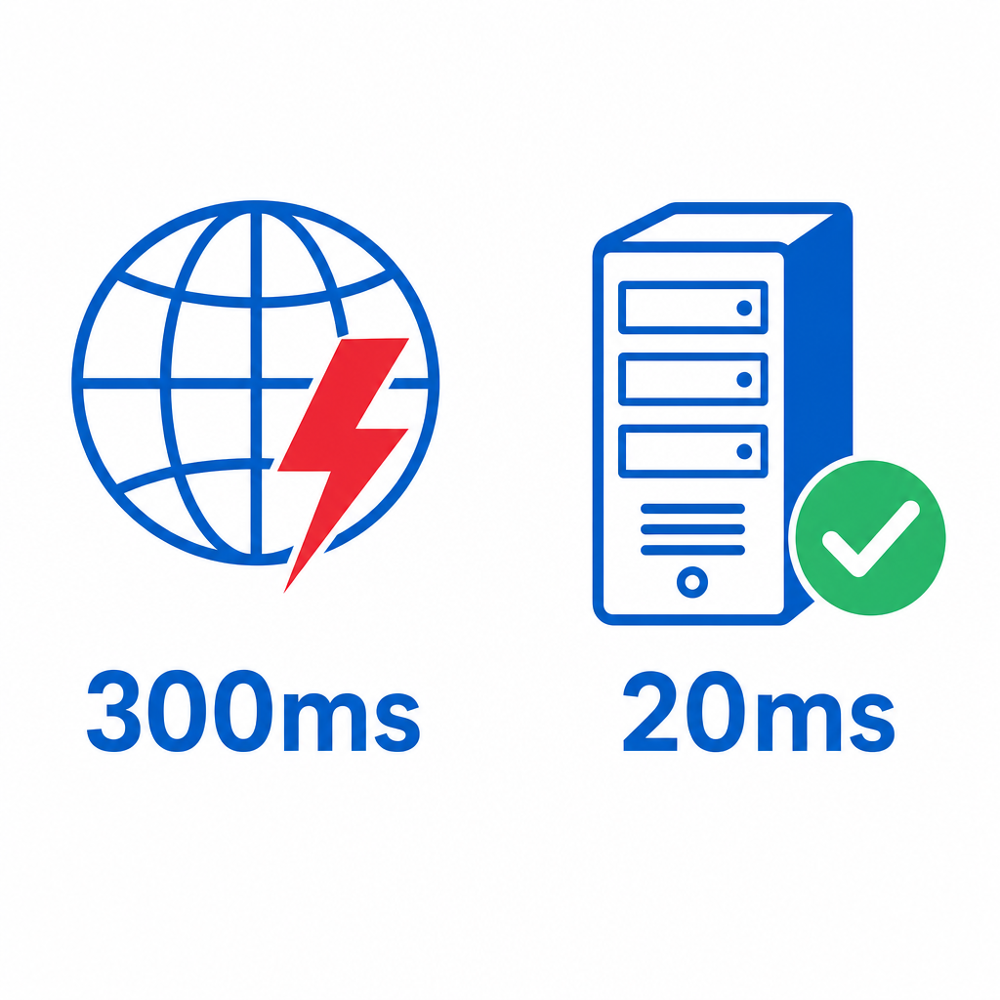
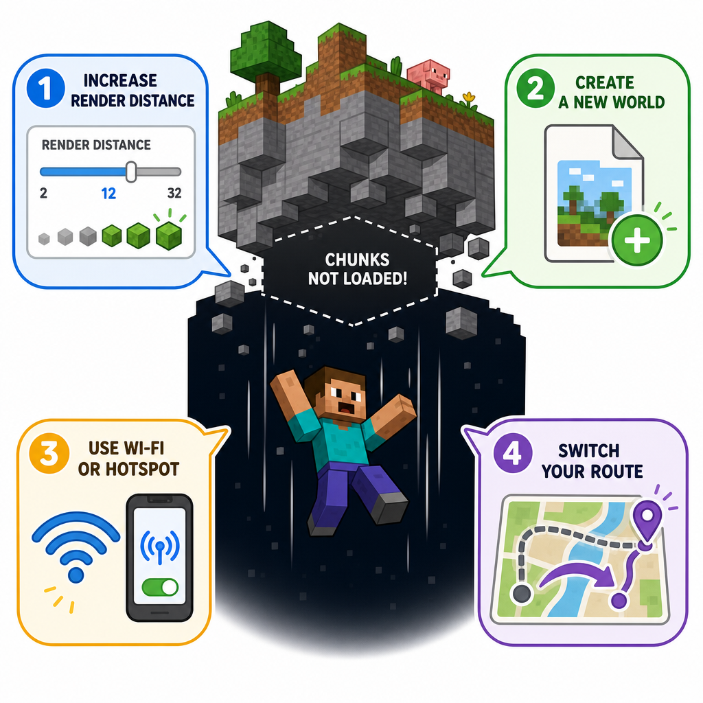

为什么选择 Katofrp 进行联机？
告别高延迟、丢包卡顿，享受流畅的联机体验
🎮 官方联机的痛点
很多游戏（如 Minecraft、星露谷物语、泰拉瑞亚等）提供了官方的联机方式，但实际体验往往不尽人意。以下是玩家经常遇到的问题：
1. 官方联机走海外服务器，延迟极高
大部分游戏的官方联机服务器部署在海外（如美国、欧洲），国内玩家连接时数据需要绕行国际网络，导致延迟动辄 200ms~500ms 甚至更高。这意味着你在游戏中的每一个操作都会有明显的"慢半拍"感觉。
2. 玩家之间 P2P 连接丢包严重
部分游戏采用 P2P（点对点）方式让玩家直连。但由于国内网络环境复杂（NAT类型限制、运营商策略等），P2P 打洞经常失败或不稳定，导致：
- 频繁掉线、连接中断
- 丢包率高，游戏卡顿、瞬移
- 部分玩家根本无法建立连接
- 不同运营商之间互联质量差
3. 联机体验不稳定
即使成功连接，官方联机也经常出现波动，尤其在晚高峰时段，国际出口带宽拥堵，延迟飙升、丢包加剧，严重影响游戏体验。

左：官方P2P联机走海外，延迟高达300ms+；右：Katofrp国内线路，延迟仅20ms
| 对比项 | 官方联机 / P2P | Katofrp |
|---|---|---|
| 网络线路 | 走海外 / P2P直连 | 国内优质线路 |
| 延迟 | 200ms~500ms+ | 10ms~50ms |
| 丢包率 | 高（尤其跨运营商） | 极低 |
| 连接稳定性 | 不稳定，易掉线 | 稳定可靠 |
| NAT穿透 | 依赖P2P打洞，常失败 | 无需打洞，直接连接 |
| 操作难度 | 有时需要端口转发等配置 | 一键联机，简单快捷 |
🚀 Katofrp 的优势
Katofrp 专为国内玩家联机场景优化，提供以下核心优势：
- 优质国内网络线路 —— 服务器部署在国内，延迟低至个位数毫秒
- 多线路可选 —— 提供多条网络线路，玩家可根据自身网络选择最优路线
- 无需P2P打洞 —— 通过服务器中转，彻底解决NAT穿透问题
- 操作简单 —— 图形化界面，一键联机，无需复杂配置
- 免费使用 —— 基础联机功能完全免费
- 支持多种游戏 —— Minecraft、星露谷、泰拉瑞亚、饥荒等热门游戏均可使用
💡 小贴士
使用 Katofrp 联机时，建议房主和加入者都选择相同或相近的线路节点，这样可以获得最低的延迟体验。
🕳️ 联机掉虚空怎么办？
在 Minecraft 等游戏联机时，部分玩家可能会遇到"掉虚空"的问题（加载不出区块，角色不断下落）。这通常是由于网络传输区块数据不及时导致的。以下是解决方案：

掉虚空通常是区块加载不及时导致的，可通过以下方法解决
减小视距（Render Distance）
将游戏视距调低到 8 或更低。视距越大，需要加载的区块数据越多，网络压力越大。降低视距可以显著减少数据传输量，避免区块加载不及时。
尝试新建存档
旧存档可能包含大量实体、掉落物或复杂红石装置，这些都会增加数据同步压力。新建一个干净的存档测试，排除存档本身的问题。
更换整合包 / 减少Mod数量
部分整合包或Mod会大幅增加网络同步数据量。尝试使用更轻量的整合包，或减少不必要的Mod，特别是那些添加大量实体和方块的Mod。
更换网络线路
在 Katofrp 客户端中尝试切换到另一条网络线路。不同线路经过的网络路径不同，换一条线路可能会显著改善连接质量。
加入者更换网络环境
如果你是加入游戏的玩家，尝试切换网络环境。例如从 WiFi 切换到手机热点，或者反过来。不同的网络出口可能有不同的连接质量。
⚠️ 注意事项
如果以上方法都尝试后仍然有问题，可能是你当前的网络环境存在较严重的限制。建议：
- 检查是否有其他程序占用大量带宽（如下载、直播等）
- 尝试在非高峰时段联机
- 联系官方群寻求技术支持
💬 遇到问题？加入官方群
如果你在使用 Katofrp 联机过程中遇到任何问题，欢迎加入我们的官方QQ群，会有热心的群友和管理员帮助你解决问题。
📌 反馈问题时请提供以下信息
• 你使用的游戏名称和版本
• 你选择的 Katofrp 线路节点
• 出现问题的具体表现（截图更佳）
• 你的网络环境（宽带/热点、运营商等）